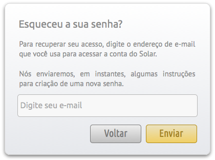
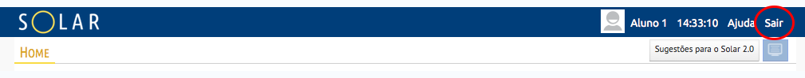
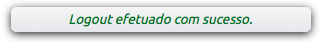

Acesso ao Ambiente¶
Cras justo odio, dapibus ac facilisis in, egestas eget quam. Praesent commodo cursus magna, vel scelerisque nisl consectetur et.
Login¶
Caso o usuário já possua uma Login e senha cadastrada, basta inserir estes dados e clicar em Acessar. A próxima página apresentada será a Home do sistema.

Cadastro¶
Para se cadastrar basta clicar em Cadastrar. Na tela seguinte será solicitado o e-mail e o CPF do usuário.
- Inserir um CPF válido

- Inserir dados pessoais
- Inserir dados de acesso

- Inserir dados de contato

- Informar a instituição na qual você pertence

Depois de concluído o cadastro o usuário já pode entrar no sistema normalmente.
Recuperar Senha¶
Caso já tenha um usuário, mas perdeu a senha, basta clicar em Esqueceu a sua senha? na tela de Login. Na próxima tela será solicitado o e-mail que você informou ao criar seu usuário.
Será enviada uma mensagem de confirmação para o endereço de e-mail informado.

Após clicar no link informado no email, será solicitada uma nova senha.

Saindo do sistema¶
Para sair do sistema basta clicar em Sair, na barra superior.
Após sair do sistema, será apresentada a mensagem Logout efetuado com sucesso na página de login.
